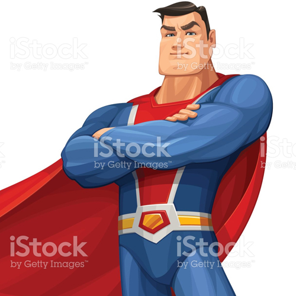
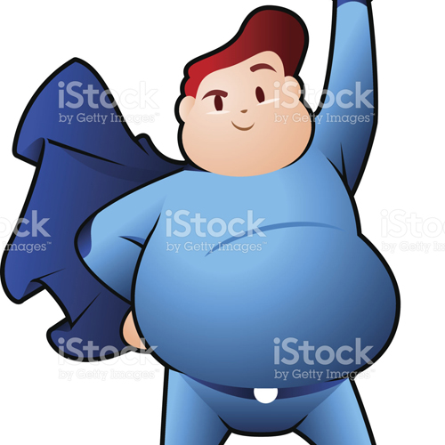
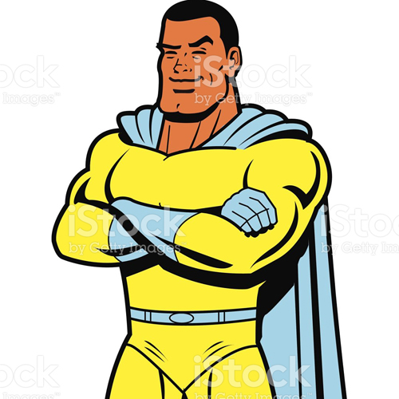
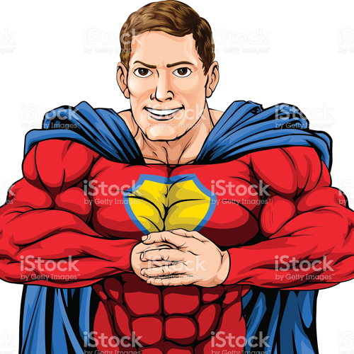
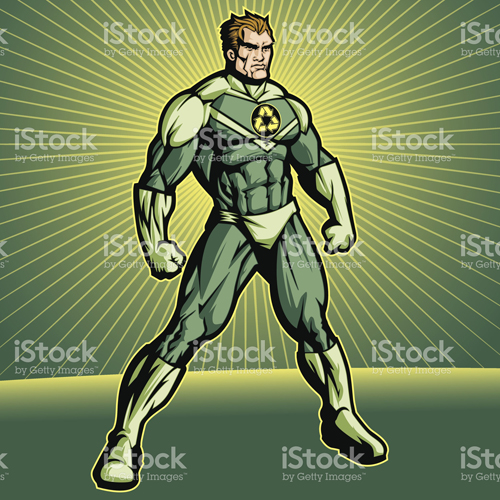
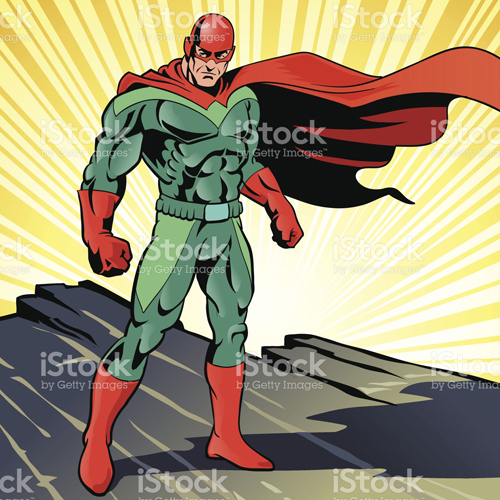

Ironjaw is able to skim the memories of others, but only when angry. He likewise has mastered the ability to make duplicates of himself and he has the power to take control of poison and bend it to his will. Ironjaw has been
known to cause his rivals to become stupid, however this power fades when he is knocked unconscious. He also developed the talent to hurl gravitic pulses from his proboscis toward a single opponent and he possesses the
power to transform corbomite into air, but he must speak words of power to do so. Ironjaw has learned to view distant locations with his mind and he can transform any vampire into cloth. Additionally, he can block deafening
sounds and deflect them toward any attacker close by and he is able to leap into computers.

Tom from Accounting has a terrific ability to predict the future. He also combats enemies using a cataclysmic set of fangs made from wood and he has the power to jump faster than the speed of light using a phenomenal horse.
Tom from Accounting has been known to transform any penguin into a rat and he developed the talent to take control of light and bend it to his will. He has mastered the ability to make dogs appear from nowhere and he is
able to tunnel through solid string. Tom from Accounting possesses all of the powers and talents of a zebra and he can erase the memories of others, but never in extreme high pressure. Also, he battles attackers with a
terrifying beak that can force rivals into another plane of existence and he has learned to create sand out of thin air.

Shriek has the ability to become gigantic. He likewise is able to erase the memories of others and he boasts an awe-inspiring mountain fortress carved from wood. Shriek has been known to absorb the damage from mental attacks
and redirect it toward a single enemy, however using this power draws a lot of attention. Additionally, he has learned to tunnel through solid diamond and he possesses the power to transform any fish into a gorilla. Shriek
can communicate with sheep from a distance and he combats attackers with a wicked collection of nails made from gold, but only in bright light. Additionally, he has the power to change shape into a rat and he has mastered
the ability to force dogs to obey his every command. Shriek developed the talent to create rubber out of thin air and he can launch powerful magnetic fields from his bracelets against multiple antagonists.

Power-Maiden possesses the power to take control of animals. Also, he is able to become camouflaged and he developed the talent to view distant locations with his mind. Power-Maiden has the power to make weapons appear from
nowhere and he has been known to change shape into a creature. He is able to absorb the damage from suffocation and redirect it toward any adversary close by and he wages war using a devastating boomerang that also grants
an unimaginable skill at survival. Power-Maiden has the ability to become invisible and he has mastered the ability to force humans to freeze in place. He likewise can spray bullets from his hands against multiple attackers
and he has been known to run to remote stars. Power-Maiden has learned to tunnel through solid rock and he has the power to jump from rooftop to rooftop using a remarkable minivan. Additionally, he can transform his body
into silver, however only in darkness. Power-Maiden has a terrific vision.

Recycle Man displays all of the powers and talents of a fly. Also, he has been known to cause his foes to become unable to smell and he has the power to spin like a whirlwind. Recycle Man has been known to slide up walls, however
using this power draws a lot of attention. Additionally, he has learned to create titanium out of thin air, but never while concentrating. Recycle Man is able to make elves appear from nowhere and he has mastered the ability
to change shape into a frog. He also is protected from damage by an energy barrier and he possesses the power to absorb the damage from mental attacks and redirect it against multiple assailants. Recycle Man developed the
talent to spit psionic death from his sai against any enemy in sight, but can only do so once a minute. He has a reputation for an unbelievable combat sense and he possesses a super capacity at avoiding attacks, but never
when well-rested.

The Mysterious Shroud developed the talent to deflect deadly radiation, but only in summer. He is known for his incredible vision and he has the power to make duplicates of himself. The Mysterious Shroud has learned to block
psychic blasts and deflect them in a field around himself, however using this power makes him invisible for one week. He likewise has a reputation for a wondrous proficiency at crafting and he has been known to confuse
the vision of a foe. The Mysterious Shroud possesses the power to transform any parrot into string and he can view distant locations with his mind. He also rides an amazing plane into battle and he carries a radioactive
rifle that also grants a miraculous wisdom. The Mysterious Shroud has developed all of the powers and talents of a seahorse and he has mastered the ability to take control of rabbits.